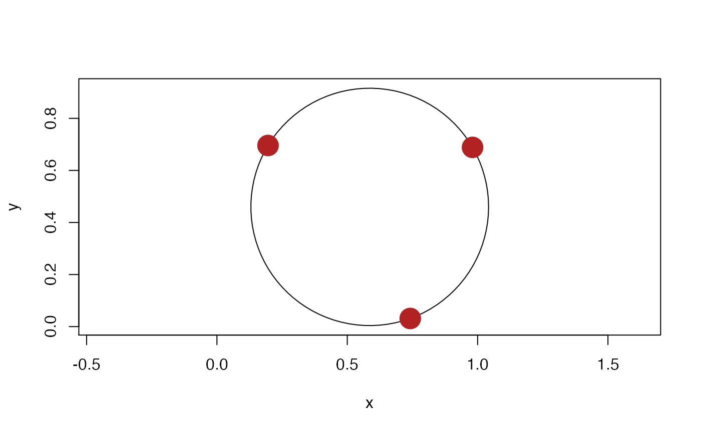

A circle is defined by a center and a radius (given as the squared radius due to the inexactness of square roots). In 3 dimensions a circle is a disc and thus have an orientation given by an orthogonal direction. If the radius is 0 the circle is considered degenerate.
circle(..., default_dim = 2) is_circle(x) as_circle(x)
| ... | Various input. See the Constructor section. |
|---|---|
| default_dim | The dimensionality when constructing an empty vector |
| x | A circle vector or an object to convert to it |
An euclid_circle vector
2 dimensional circles
Providing one point and one numeric vector will construct circles centered at the point with the squared radius given by the numeric.
Providing two points will construct circles centered between the two points with a radius of half the distance between the two points.
Providing three point vectors will construct the unique circle that pass through the three points.
3 dimensional circles
Providing three point vectors will construct the unique circle that pass through the three points.
Providing a point, a numeric, and a plane will construct a circle centered on the point with the squared radius given by the numeric and the orientation given by the plane. The point must lie on the plane
Providing a point, a numeric, and a vector will construct a circle centered on the point with the squared radius given by the numeric and the orientation orthogonal to the vector
Providing two spheres will construct a circle given by the intersection of the two spheres. The spheres must intersect
Providing a sphere and a plane will construct a circle given by the intersection of the sphere and the plane. The sphere and plane must intersect.
## 2 Dimensions point1 <- point(runif(5), runif(5)) point2 <- point(runif(5), runif(5)) point3 <- point(runif(5), runif(5)) number <- exact_numeric(1:5) # Construction with center and radius circ <- circle(point1, number) circ#> <2D circles [5]> #> [1] <x:0.301, y:0.949, r2:1> <x:0.636, y:0.18, r2:2> <x:0.479, y:0.217, r2:3> #> [4] <x:0.432, y:0.68, r2:4> <x:0.706, y:0.499, r2:5># integers and numerics are converted automatically circle(point1, 1:5)#> <2D circles [5]> #> [1] <x:0.301, y:0.949, r2:1> <x:0.636, y:0.18, r2:2> <x:0.479, y:0.217, r2:3> #> [4] <x:0.432, y:0.68, r2:4> <x:0.706, y:0.499, r2:5># You are free to name the input for readability circle(center = point1, radius = number)#> <2D circles [5]> #> [1] <x:0.301, y:0.949, r2:1> <x:0.636, y:0.18, r2:2> <x:0.479, y:0.217, r2:3> #> [4] <x:0.432, y:0.68, r2:4> <x:0.706, y:0.499, r2:5># Construction with 2 points circle(point1, point2)#> <2D circles [5]> #> [1] <x:0.471, y:0.97, r2:0.0295> <x:0.648, y:0.575, r2:0.156> #> [3] <x:0.288, y:0.303, r2:0.0441> <x:0.599, y:0.571, r2:0.0398> #> [5] <x:0.738, y:0.407, r2:0.00943># Construction with 3 points circle(point1, point2, point3)#> <2D circles [5]> #> [1] <x:0.506, y:0.687, r2:0.111> <x:0.068, y:0.593, r2:0.493> #> [3] <x:0.289, y:0.307, r2:0.0441> <x:0.65, y:0.648, r2:0.0483> #> [5] <x:0.485, y:0.32, r2:0.081>## 3 Dimensions point1 <- point(runif(5), runif(5), runif(5)) point2 <- point(runif(5), runif(5), runif(5)) point3 <- point(runif(5), runif(5), runif(5)) circ <- circle(point1, point2, point3) circle(point1, number, as_vec(point2))#> <3D circles [5]> #> [1] <x:0.57, y:0.542, z:0.0281, r2:1, dx:0.56, dy:0.261, dz:0.213> #> [2] <x:0.336, y:0.545, z:0.466, r2:2, dx:0.857, dy:0.29, dz:0.672> #> [3] <x:0.596, y:0.279, z:0.39, r2:3, dx:0.385, dy:0.48, dz:0.0586> #> [4] <x:0.192, y:0.447, z:0.0201, r2:4, dx:0.528, dy:0.92, dz:0.997> #> [5] <x:0.948, y:0.372, z:0.377, r2:5, dx:0.601, dy:0.401, dz:0.149>#> <3D euclid_planes [5]> #> [1] <a:-0.16, b:-0.00572, c:-0.0174, d:0.0947> #> [2] <a:0.169, b:0.234, c:-0.139, d:-0.119> #> [3] <a:0.0689, b:-0.0344, c:-0.0649, d:-0.00619> #> [4] <a:-0.0436, b:-0.17, c:0.0972, d:0.0822> #> [5] <a:0.105, b:0.137, c:-0.142, d:-0.0965>#> <3D euclid_spheres [5]> #> [1] <x:0.537, y:0.541, z:0.33, r2:0.0922> <x:0.611, y:0.291, z:0.375, r2:0.149> #> [3] <x:0.549, y:0.467, z:0.24, r2:0.0602> <x:1.07, y:0.431, z:0.387, r2:0.902> #> [5] <x:0.706, y:0.571, z:0.39, r2:0.0983>